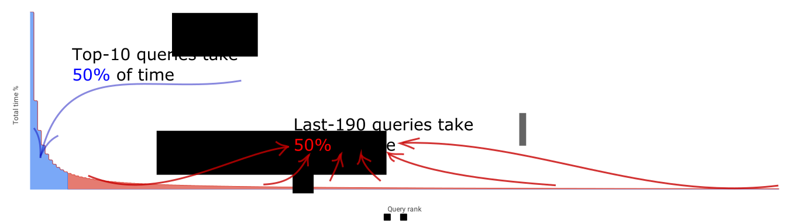

We insist that every SQL database can work faster on the same environment (CPU, RAM, HDD/SSD...). We know how to do that. We design tools that find slow queries in your DB, analyse it and find the best solutions for optimizing and speeding it up.
We connect our service to your database and analyze your queries and statistics. Every day our analyser parses all queries that were executed and tries to find optimization for every query. After that it sends report to your DBA with evaluation of performance boost for every optimization.
Let's assume your database executes 200 different queries every day. We can collect statistics and sort all queries by total time spent for all executions. Zipf empirical law states that the first query takes 2 times more time than the second and 3 times more then the third query etc. So n-ranked query takes n-times less time then the first query. For example the first query takes 10% of all time spent by the server during 24 hours. The second query 5%, the third 3.33% etc.
Zipf distribution for 200 queries

So top-10 queries takes about 50% of all time (marked with color) The rest 190 queries take also about 50% (marked with color).
In order to speed up database usually DBA tries to optimize top-10 queries. It's good strategy but after 3-7 iterations it's not obviously how to optimize top-10 queries. It's time to optimize the rest 190 queries. They look fast but usually these queries can be 10x or even 100x times faster because nobody tries to optimize it. In the same time these queries takes CPU and IO resources and make top-10 queries slower. So optimizing last-190 queries makes top-10 queries faster.
Usually most of these last-190 queries are easy to optimize. The only problem is the number. Some our clients have more than 1000 different queries and last-990 queries takes about 70% of time. Our goal is to analyze all queries automatically to reveal problems and to propose solutions.
We connect to client's DB in read-only mode and we don't read your data. We just need your metadata information. So we use DB-accounts with minimum permission for our analyser to avoid any possibility of grabbing your data.
Sometimes we need to understand the nature of your data to propose the best solutions. In this case we can install our application on you side so we don't have access to your DB.
NFSQL Optimizer includes different approaches for optimizing SQL queries. Here some of them:
Create index for field if it's used in join. It's one of the simplest way to optimize your queries but sometimes it's too difficult to check if all indexes are created. So it's usual when required indexes are missed.
SELECT p.id, p.first_name, p.last_name, c.name AS company_name
FROM person p
JOIN company c on p.company_id = c.id
Check if index for field person.company_id is created
NFSQL can check all indexes automatically and warn if it is missed.
Correlated query is a subquery which uses fields from super query as params. So it can be executed many times (at least 1 query execution per one result row).
SELECT p.id, p.first_name, p.last_name,
(
SELECT c.name
FROM company c where c.id = p.company_id
) AS company_name
FROM person p
Redesign correlated subquery that depends on field person.company_id from super query
SELECT p.id, p.first_name, p.last_name, c.name AS company_name
FROM person p left join company c on p.company_id = c.id
COUNT takes a lot of time. Sometimes it's necessity in most cases user just want to know if there are 100 records or 2 billions. Have you seen Google
Subqueries are slow but sometimes it's super-slow. COUNT finds all rows and takes a lot of time even if you need to check if it returns only 10 rows. The following request returns all companies that contains 10 employees.
SELECT c.id, c.name
FROM company c
WHERE (SELECT COUNT(p.id) FROM person p WHERE p.company_id = c.id) > 10
It can be optimized with the following query.
SELECT c.id, c.name
FROM company c
WHERE (SELECT COUNT(t.id) FROM (SELECT p.id FROM person p WHERE p.company_id = c.id LIMIT 11) AS t) > 10
This query does not try to find all rows in table person and stops after matching 11 rows.
Use aggregated functions in subqueries very carefully, much more carefully than in usual queries. For example this query finds companies where the oldest employee was born before 1970 year.
SELECT c.id, c.name
FROM company c
WHERE (SELECT MIN(p.birth_date FROM person p WHERE p.company_id = c.id) < '1970-01-01'
Redesign this query and replace subselect which contains MAX / MIN with EXISTS. This query does the same.
SELECT c.id, c.name
FROM company c
WHERE EXISTS (SELECT ID FROM person p WHERE p.birth_date < '1970-01-01')
OR makes queries slow.
SELECT c.id, c.name
FROM company c
WHERE id = 1 OR id = 5 OR id = 12 OR id = 24
Replace OR with IN clause
SELECT c.id, c.name
FROM company c
WHERE id IN (1, 5, 12, 24)
SELECT p.id, p.first_name, p.last_name
FROM person p
WHERE extract(‘year’, p.birth_date) = 2000
condition can be redesigned as
SELECT p.id, p.first_name, p.last_name
FROM person p
WHERE p.birth_date BETWEEN '2000-01-01 AND '2001-01-01'
Usual practice is to use UPPER / LOWER functions for case insensitive mode search.
SELECT p.id, p.first_name, p.last_name
FROM person p
WHERE UPPER(p.first_name) = 'JOHN'
The condition can be redesigned as
SELECT p.id, p.first_name, p.last_name
FROM person p
WHERE p.first_name ILIKE 'John'
The following query needs to read all records from table person.
SELECT DISTINCT p.company_id
FROM person p
Query can be redesigned as
SELECT c.id
FROM company c
WHERE EXISTS (SELECT p.id FROM person p WHERE p.company_id = c.id)
{kind=link}